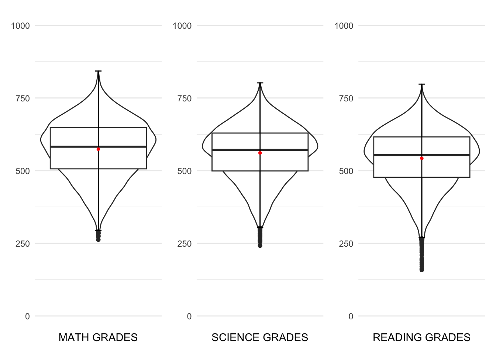
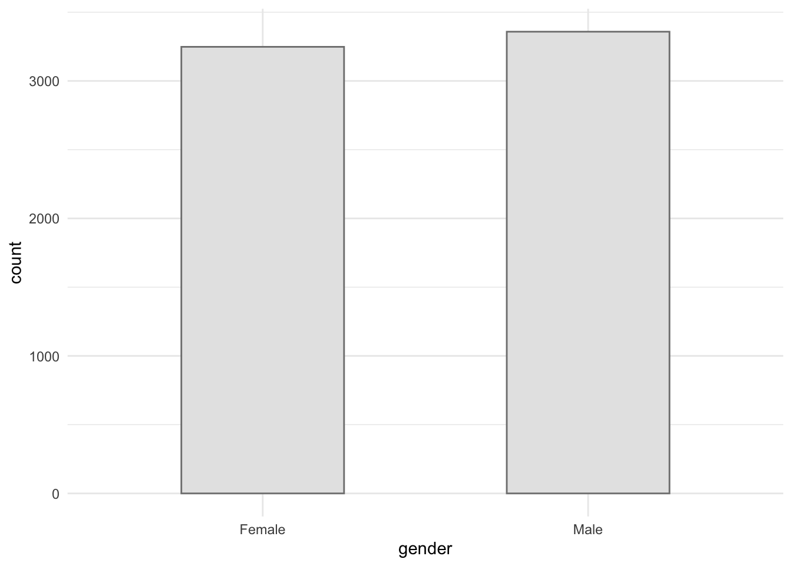
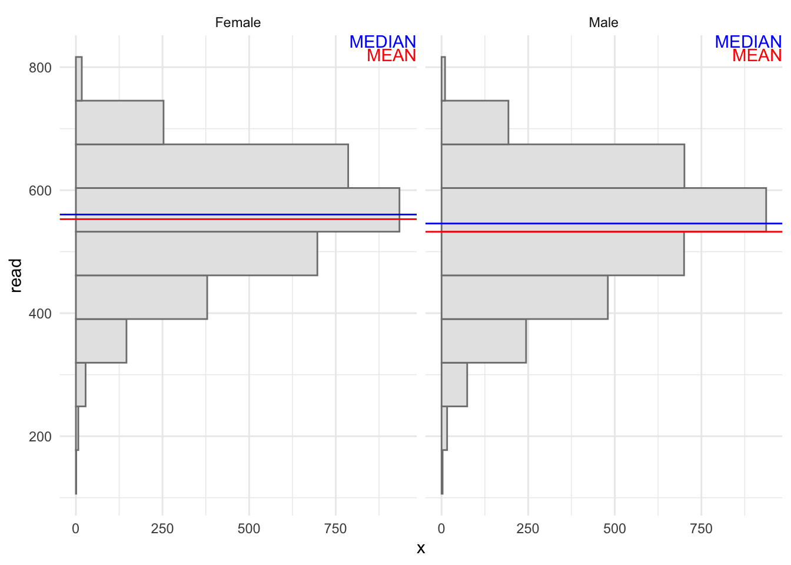
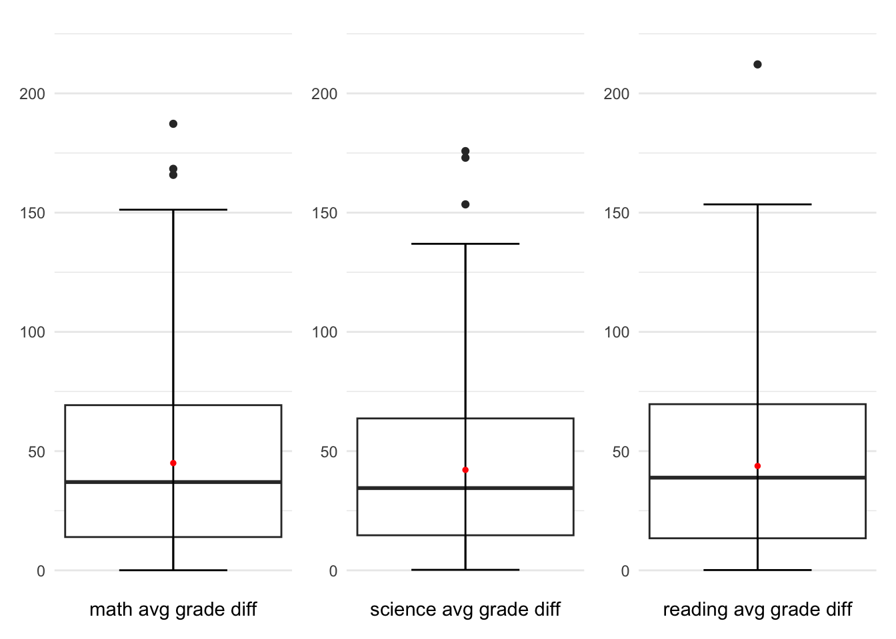
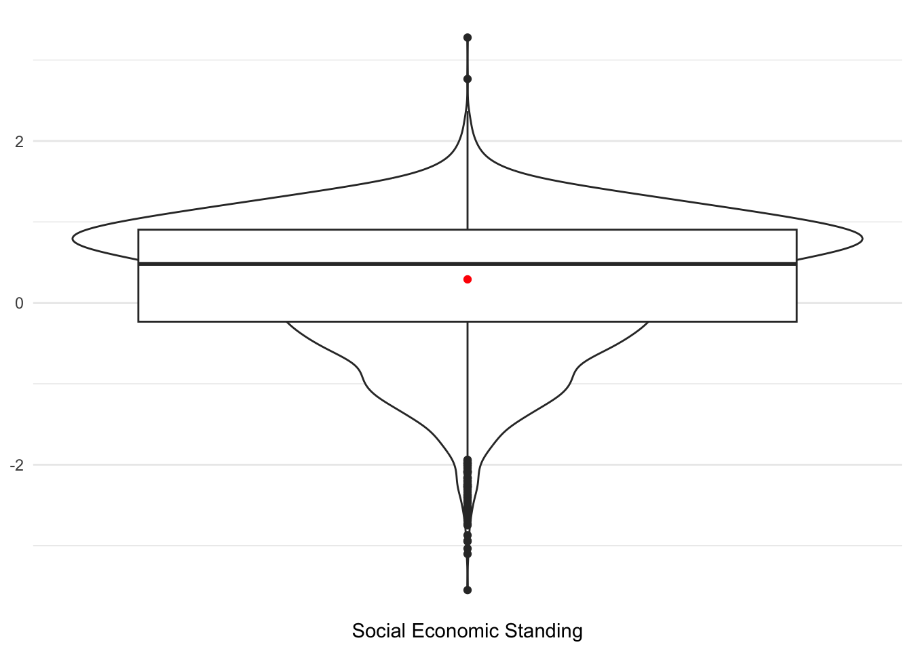
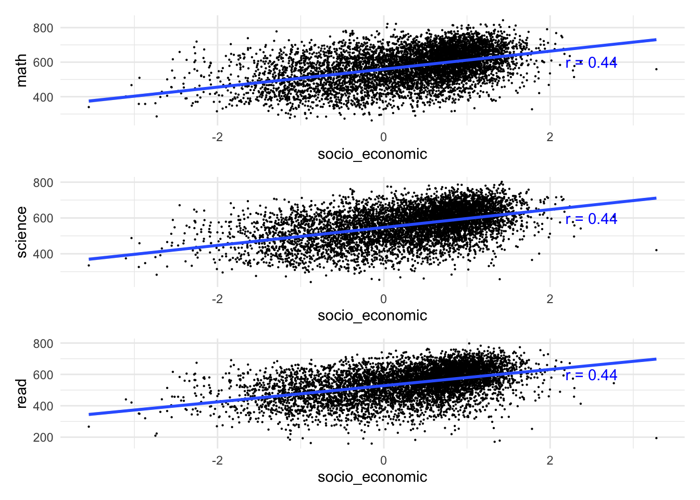

pacman::p_load(tidyverse, haven, patchwork)Take-Home Exercise 1
Prologue
In this Take home Exercise we are going to explore the data from PISA 2022 database released on 5 December 2022. The dataset is the result of questionnaire filled by the students.
Getting Started
Importing packages
In this take home exercise we are going to utilise several package
- Tidyverse (to wrangle and plot our data)
- Haven (to read our dataset from sas data type)
- Patchwork (to plot multiple plot in the same figure)
Importing dataset
Importing the data in sas data type
stu_qqq <- read_sas('data/cy08msp_stu_qqq.sas7bdat')Filtering the data to singapore
stu_qqq_SG <- stu_qqq %>%
filter(CNT == "SGP")Export the filtered dataset to rds to ease further data importing
write_rds(stu_qqq_SG, 'data/stu_qqq_SG.rds')Read the exported rds
stu_qqq_SG <- read_rds('data/stu_qqq_SG.rds')Data Preparation
Variable preparations
Filtering the columns that will be used for further analysis, in this analysis we are going to take 6 variables, they are:
CNTSCHID = school_id
ST004D01T = gender
math = average of 10 math possible values
science = average of 10 science possible values
read = average of 10 reading possible values
ESCS = social economic
Rename the columns to a more understandable names
Recode the answers of questions to a more descriptive measures
Change the columns data type
stu_qqq <- stu_qqq_SG %>%
mutate(math = rowMeans(select(stu_qqq_SG,
PV1MATH,PV2MATH,PV3MATH,PV4MATH,PV5MATH,PV6MATH,PV7MATH,PV8MATH,PV9MATH,PV10MATH)),
science = rowMeans(select(stu_qqq_SG,
PV1SCIE,PV2SCIE,PV3SCIE,PV4SCIE,PV5SCIE,PV6SCIE,PV7SCIE,PV8SCIE,PV9SCIE,PV10SCIE)),
read = rowMeans(select(stu_qqq_SG,
PV1READ,PV2READ,PV3READ,PV4READ,PV5READ,PV6READ,PV7READ,PV8READ,PV9READ,PV10READ))
) %>%
select(CNTSCHID,ST004D01T,math,science,read,ESCS) %>%
rename(c(school_ID = "CNTSCHID",
gender = "ST004D01T",
socio_economic = "ESCS")) %>%
mutate(gender = recode(gender,
"1" = "Female",
"2" = "Male"))
stu_qqq$school_ID <- as.factor(stu_qqq$school_ID)
stu_qqq$gender <- as.factor(stu_qqq$gender)Overview
glimpse(stu_qqq)Rows: 6,606
Columns: 6
$ school_ID <fct> 70200052, 70200134, 70200112, 70200004, 70200152, 70200…
$ gender <fct> Female, Male, Male, Male, Female, Female, Male, Male, F…
$ math <dbl> 605.2533, 689.9528, 676.7768, 401.0528, 436.1151, 518.1…
$ science <dbl> 639.7873, 672.0703, 660.0384, 343.6425, 479.2390, 476.0…
$ read <dbl> 667.4296, 627.6078, 582.9252, 361.3969, 475.6763, 431.4…
$ socio_economic <dbl> 0.1836, 0.8261, -1.0357, -0.9606, 0.0856, 0.1268, -0.01…Exploratory Data Analysis (EDA)
In this section 4 analysis will be performed to get insights and uncover truth of factors for singapore student perfomances.
1. Student Performances
From the initial preview, we can see that there are no NA values for all the grades.
stu_qqq_grade <- stu_qqq %>%
select (math, science, read)
colSums(is.na(stu_qqq_grade)) math science read
0 0 0 p1 <- ggplot(data = stu_qqq_grade,
aes(y = math)) +
geom_violin(aes(x=0)) +
geom_boxplot()+
stat_boxplot(geom = "errorbar", width = 0.05) +
stat_summary(aes(x = 0),
geom = "point",
fun.y = "mean",
colour = "red",
size = 1) +
scale_y_continuous(NULL, limits = c(0,1000)) +
scale_x_continuous("MATH GRADES", breaks = NULL) +
theme_minimal()
p2 <- ggplot(data = stu_qqq_grade,
aes(y = science)) +
geom_violin(aes(x=0)) +
geom_boxplot()+
stat_boxplot(geom = "errorbar", width = 0.05) +
stat_summary(aes(x = 0),
geom = "point",
fun.y = "mean",
colour = "red",
size = 1) +
scale_y_continuous(NULL, limits = c(0,1000)) +
scale_x_continuous("SCIENCE GRADES", breaks = NULL) +
theme_minimal()
p3 <- ggplot(data = stu_qqq_grade,
aes(y = read)) +
geom_violin(aes(x=0)) +
geom_boxplot() +
stat_boxplot(geom = "errorbar", width = 0.05) +
stat_summary(aes(x = 0),
geom = "point",
fun.y = "mean",
colour = "red",
size = 1) +
scale_y_continuous(NULL, limits = c(0,1000)) +
scale_x_continuous("READING GRADES", breaks = NULL) +
theme_minimal()
p1|p2|p3
From the figure above, the distribution of the performances are normal. However, there is a slight higher performance from one to another. (math > science > reading). Can also be seen that the variance for each performance is quite large. This could mean that student in Singapore does have large performance differences between one and another. This could be caused by multiple reasoning such as the school, gender, and social economic standing.
2. Gender
The first factor that we are going to look into is gender.
length(stu_qqq$gender[is.na(stu_qqq$gender)])[1] 0ggplot(data = stu_qqq,
aes(x = gender)) +
geom_bar(width = 0.5,
color = "grey50",
fill = "grey90")+
theme_minimal()
From the distribution graph above can be seen that the questionnaire have similar number of male and female student.
From the graph below, can be seen that there are VERY SMALL differences between male and female science scores, with male have a SLIGHTLY HIGHER average and median score
Show the code
stats <- data.frame(gender = as.factor(c('Female','Male')),
mean = c(mean(stu_qqq$math[stu_qqq$gender == "Female"]),
mean(stu_qqq$math[stu_qqq$gender == "Male"])),
median = c(median(stu_qqq$math[stu_qqq$gender == "Female"]),
median(stu_qqq$math[stu_qqq$gender == "Male"])) )
ggplot(data = stu_qqq,
aes(y = math)) +
geom_histogram(bins = 10,
color = 'grey50',
fill = 'grey90') +
facet_wrap(~ gender) +
geom_hline(data = stats,
mapping = aes(yintercept=mean),
color = "red") +
geom_hline(data = stats,
mapping = aes(yintercept=median),
color = "blue") +
annotate(
'text',
x = Inf,
y = Inf,
hjust = 1,
vjust = 2.1,
label = paste("MEAN"),
color = "red"
) +
annotate(
'text',
x = Inf,
y = Inf,
hjust = 1,
vjust = 1,
label = paste("MEDIAN"),
color = "blue"
) +
theme_minimal()From the graph below, can be seen that there are VERY SMALL differences between male and female science scores, with male have a SLIGHTLY HIGHER average and median score
Show the code
stats <- data.frame(gender = as.factor(c('Female','Male')),
mean = c(mean(stu_qqq$science[stu_qqq$gender == "Female"]),
mean(stu_qqq$science[stu_qqq$gender == "Male"])),
median = c(median(stu_qqq$science[stu_qqq$gender == "Female"]),
median(stu_qqq$science[stu_qqq$gender == "Male"])) )
ggplot(data = stu_qqq,
aes(y = science)) +
geom_histogram(bins = 10,
color = 'grey50',
fill = 'grey90') +
facet_wrap(~ gender) +
geom_hline(data = stats,
mapping = aes(yintercept=mean),
color = "red") +
geom_hline(data = stats,
mapping = aes(yintercept=median),
color = "blue") +
annotate(
'text',
x = Inf,
y = Inf,
hjust = 1,
vjust = 2.1,
label = paste("MEAN"),
color = "red"
) +
annotate(
'text',
x = Inf,
y = Inf,
hjust = 1,
vjust = 1,
label = paste("MEDIAN"),
color = "blue"
) +
theme_minimal()From the graph below, can be seen that there are VERY SMALL differences between male and female reading scores, with male have a SLIGHTLY LOWER average and median score
Show the code
stats <- data.frame(gender = as.factor(c('Female','Male')),
mean = c(mean(stu_qqq$read[stu_qqq$gender == "Female"]),
mean(stu_qqq$read[stu_qqq$gender == "Male"])),
median = c(median(stu_qqq$read[stu_qqq$gender == "Female"]),
median(stu_qqq$read[stu_qqq$gender == "Male"])) )
ggplot(data = stu_qqq,
aes(y = read)) +
geom_histogram(bins = 10,
color = 'grey50',
fill = 'grey90') +
facet_wrap(~ gender) +
geom_hline(data = stats,
mapping = aes(yintercept=mean),
color = "red") +
geom_hline(data = stats,
mapping = aes(yintercept=median),
color = "blue") +
annotate(
'text',
x = Inf,
y = Inf,
hjust = 1,
vjust = 2.1,
label = paste("MEAN"),
color = "red"
) +
annotate(
'text',
x = Inf,
y = Inf,
hjust = 1,
vjust = 1,
label = paste("MEDIAN"),
color = "blue"
) +
theme_minimal()
Overall, can be concluded that student’s performances are EQUAL no matter the gender is.
3. School
length(stu_qqq$school_ID[is.na(stu_qqq$school_ID)])[1] 0There are no NA cell on school ID.
length(unique(stu_qqq$school_ID))[1] 164The student that was participating in this questionnaire was from 164 different school in Singapore
average_math_SG <- mean(stu_qqq$math)
average_scie_SG <- mean(stu_qqq$science)
average_read_SG <- mean(stu_qqq$read)
stu_qqq_sch <- stu_qqq %>%
group_by(school_ID) %>%
mutate(average_math_diff = abs(mean(math)-average_math_SG),
average_science_diff = abs(mean(science)-average_scie_SG),
average_read_diff = abs(mean(read)-average_read_SG)) %>%
select(school_ID, average_math_diff, average_science_diff, average_read_diff) %>%
unique() On the code above we are going to calculate the average of performance of student for each school across Singapore against Singapore overall average.
Followed by calculating the error or the differences between each school average and the average in Singapore.
Show the code
p1 <- ggplot(data = stu_qqq_sch,
aes(y = average_math_diff)) +
geom_boxplot(width = 0.1) +
stat_boxplot(geom = "errorbar", width = 0.05) +
stat_summary(aes(x = 0),
geom = "point",
fun.y = "mean",
colour = "red",
size = 1) +
scale_y_continuous(NULL, limits = c(0,220)) +
scale_x_continuous("math avg grade diff", breaks = NULL) +
theme_minimal()
p2 <- ggplot(data = stu_qqq_sch,
aes(y = average_science_diff)) +
geom_boxplot(width = 0.1) +
stat_boxplot(geom = "errorbar", width = 0.05) +
stat_summary(aes(x = 0),
geom = "point",
fun.y ="mean",
colour ="red",
size=1) +
scale_y_continuous(NULL, limits = c(0,220)) +
scale_x_continuous("science avg grade diff", breaks = NULL) +
theme_minimal()
p3 <- ggplot(data = stu_qqq_sch,
aes(y = average_read_diff)) +
geom_boxplot(width = 0.1) +
stat_boxplot(geom = "errorbar", width = 0.05) +
stat_summary(aes(x = 0),
geom = "point",
fun.y ="mean",
colour ="red",
size=1) +
scale_y_continuous(NULL, limits = c(0,220)) +
scale_x_continuous("reading avg grade diff", breaks = NULL) +
theme_minimal()
p1|p2|p3
The plots above show that the differences between all study subject were similar. However, the differences between a school and the Singapore average are ranged from 0 to 220. And, the average differences is around 40. This mean that not every single school in Singapore are having the same performance with each other.
On the other hand, the q3 of the box plot lay around 70 point scores. This mean that almost 75% of school in Singapore are located between 0-70 point difference to national average. On the other side, there are some school that are having almost 150 point difference either higher or lower against the national average.
Conclusion
Student performances between subjects are similar
Gender does not affect student performances
Not all school in Singapore are equal
Social economic standing play a small part toward students’ performances
4. Social Economic
The last factor that are going to be explored is social economic. The social economic range from -3.55 to 3.28. there are 47 row that has no social economic score.
The data contain na value. Therefore, we are going to remove it from our analysis using
drop_na().The code below plot the distribution of student social economic standing in Singapore.
Show the code

Show the code

From all the 3 plot, can be seen that the scatter are quite distributed across all levels. However, all the correlation between social economic and all the performances are around 0.44 which show weak to medium positive correlation between the social economic and student’s performances. Can be said that the higher social economic standing of a student, the higher their score will be.